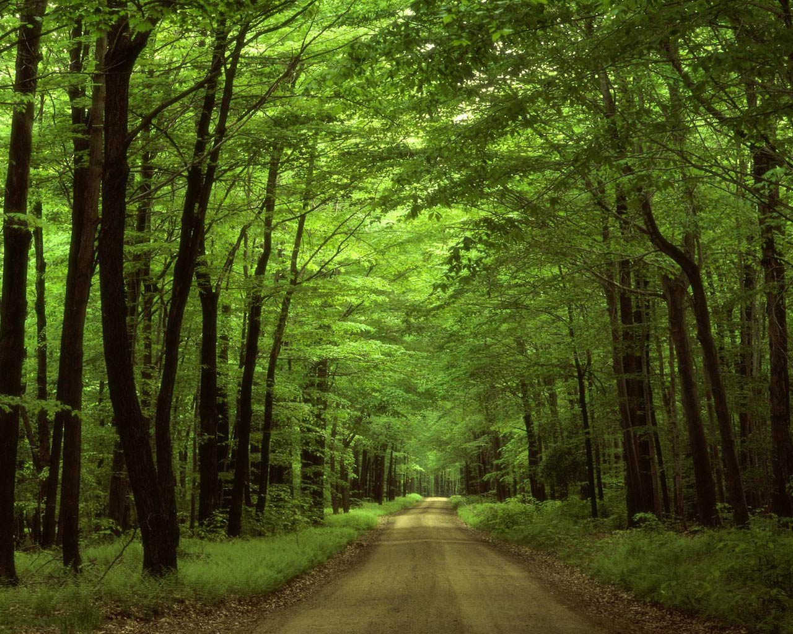
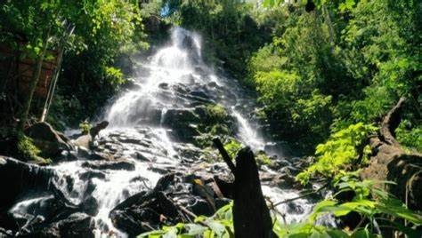
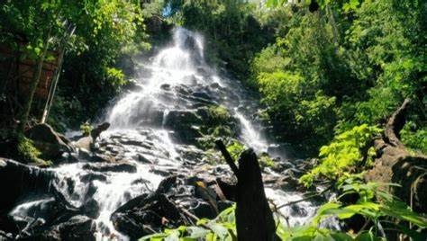
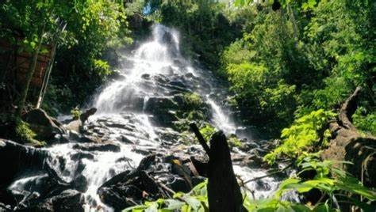
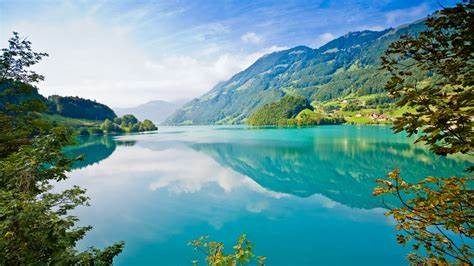
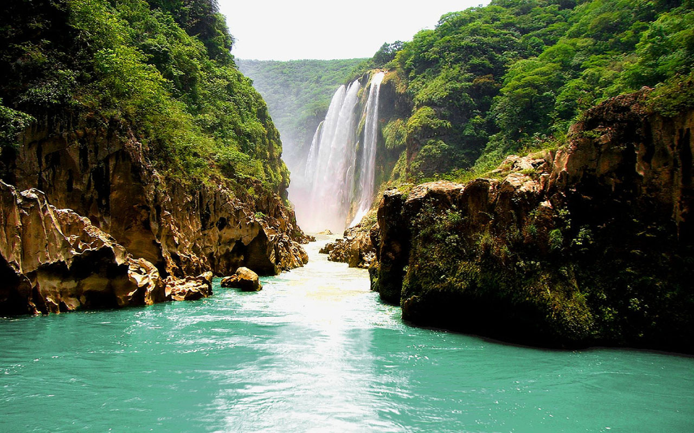
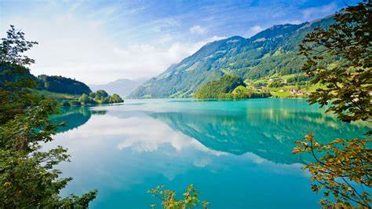
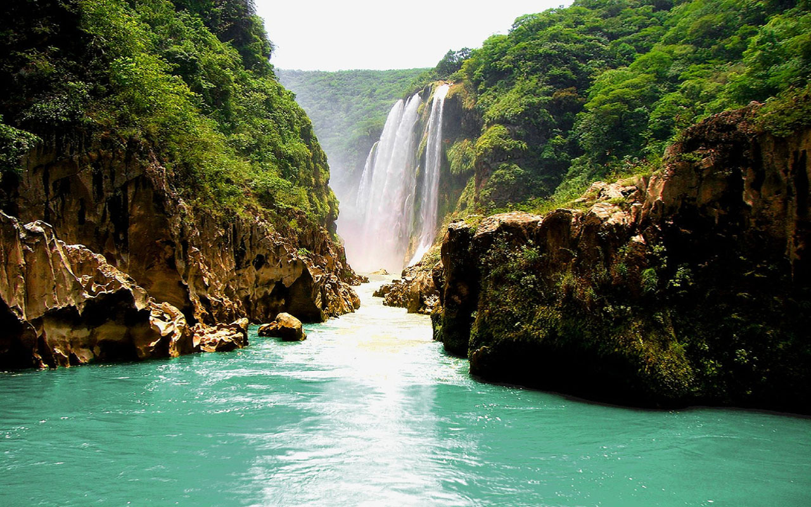

Descubre destinos únicos con las fotos y videos compartidos por nuestra comunidad

 


 



Lugares Para Visitar
- Islas Galápagos: Un paraíso natural con paisajes volcánicos y playas vírgenes, hogar de especies únicas de flora y fauna.
- Volcán Cotopaxi: Uno de los volcanes activos más altos del mundo, ubicado en el Parque Nacional Cotopaxi, con vistas espectaculares.
- Laguna Quilotoa: Un cráter volcánico con una impresionante laguna de aguas turquesas, ideal para senderismo.
- Parque Nacional Cajas: Cerca de Cuenca, este parque ofrece paisajes andinos con lagunas glaciares y diversidad de fauna.
- Bosque Nublado de Mindo: Un lugar perfecto para los amantes de la naturaleza, con cascadas, aves exóticas y exuberante vegetación.
- Amazonía Ecuatoriana: Explora la selva amazónica y sus ríos, con una increíble biodiversidad y paisajes verdes infinitos.
- Parque Nacional Yasuni: Uno de los lugares con mayor biodiversidad del planeta, en plena Amazonía.
- Baños y sus Cascadas: La ciudad de Baños es famosa por sus cascadas, como la Cascada del Pailón del Diablo y la Ruta de las Cascadas.
- Parque Nacional Podocarpus: Ubicado en el sur de Ecuador, ofrece paisajes de montaña y bosque nublado con una gran diversidad biológica.
- Isla de la Plata: Conocida como la "pequeña Galápagos", ofrece paisajes costeros y una rica vida marina.
Estos lugares destacan por su belleza natural y paisajes únicos.